Unreal Integration 2.02
5. Niagara Integration
Niagara is Unreal Engines VFX System and this section explains how to use the FMOD Integration with it.
In Niagara you are able to play one shot events, play persistent events and update parameters.
5.0.1 Adding FMOD Events to Niagara system
To view the available FMOD Niagara Modules, make sure to enable 'Plugins' in the Source Filtering options:
| UE5 | UE4 |
|---|---|
| 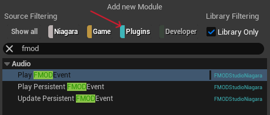 | 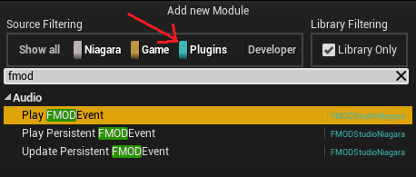 |
5.0.2 Modules
An FMOD Niagara module can be added to one or multiple Unreal Niagara Modules depending on the desired behavior.
PlayFMODEvent
This can be added to the System, Emitter or Particle modules.
Plays a one shot event at the given location that cannot be controlled after being played.
| UE5 | UE4 |
|---|---|
| 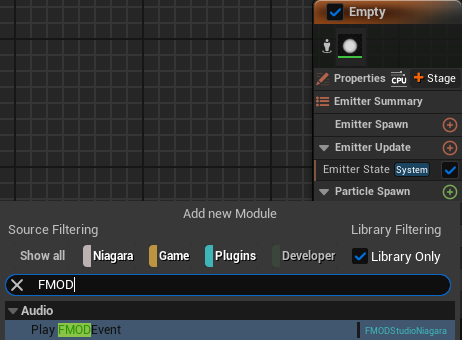 | 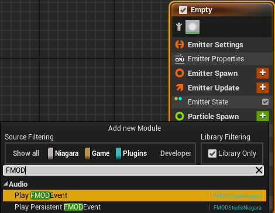 |
| 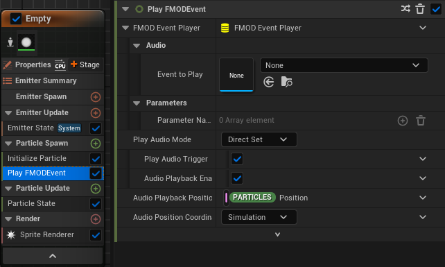 |  |
FMODEventPlayer
This can be added to the System, Emitter or Particle modules.
An FMODEvent reference that can be used with the play and update modules.
By assigning an Event to the FMOD Event Player, you can use it to play multiple one shots of the same event with the same settings or it can be used with persistance events that require updating over its lifetime.
| UE5 | UE4 |
|---|---|
| 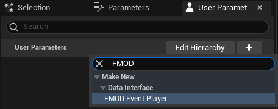 | 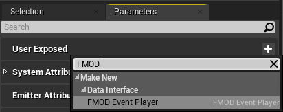 |
| 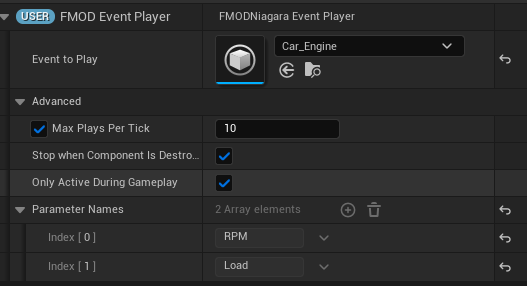 | Found in UE editor window 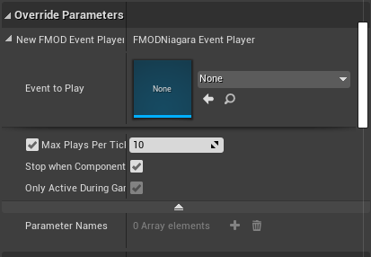 |
PlayPersistentFMODEvent
This can be added to the System, Emitter or Particle modules.
Play an event from a reference that can later be used with UpdatePersistentFMODEvent.
| UE5 | UE4 |
|---|---|
| 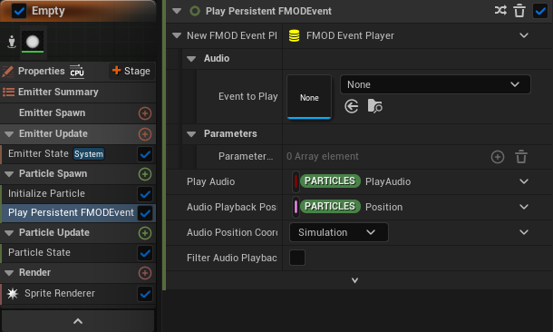 | 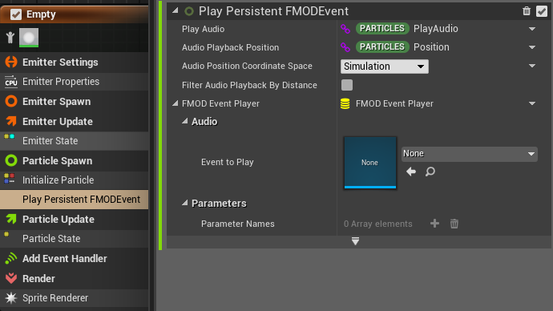 |
UpdatePersistentFMODEvent
This can be added to the System, Emitter or Particle modules.
Used to update information of an event referenced from FMODEventPlayer.
You can have multiple of these if you need to control multiple parameters.
FMOD Parameters need to be referenced by index from the FMODEventPlayer.
| UE5 | UE4 |
|---|---|
| 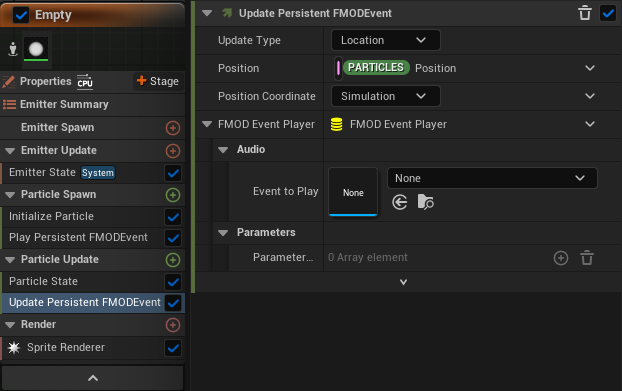 | 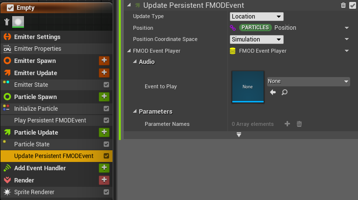 |
5.0.3 Playing a one shot
Basic example of how to add a one shot event to an emitter:
- Add a PlayFMODEvent module to emitter.
- Assign an FMOD Event.
- Add your emitter to the scene and press play to hear it in action.
5.0.4 Playing a persistent event
- Add an FMODEventPlayer module to the emitter and assign an FMOD Event.
- Add a PlayPersistentFMODEvent module to emitter.
- With the
PlayPersistentFMODEventmodule selected, drag yourFMODEventPlayerinto theFMOD Event Playerparameter.
| UE5 | UE4 |
|---|---|
| 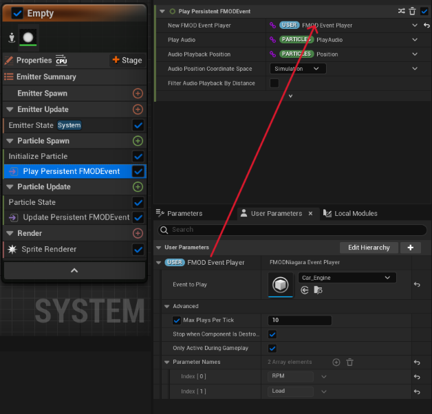 | 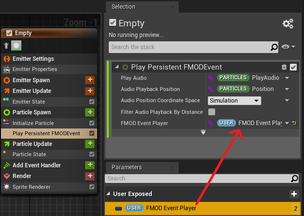 |
- If you are setting FMOD Parameters, they need to be referenced by index number from the
FMODEventPlayer. - Add your emitter to the scene and press play to hear it in action.
5.0.5 Updating a persistent event
Continuing on from Playing a persistent event as you will need both the event player and play modules.
- Add an UpdatePersistentFMODEvent module to the emitter.
- With the
UpdatePersistentFMODEventmodule selected, drag yourFMODEventPlayerinto theFMOD Event Playerparameter.
| UE5 | UE4 |
|---|---|
| 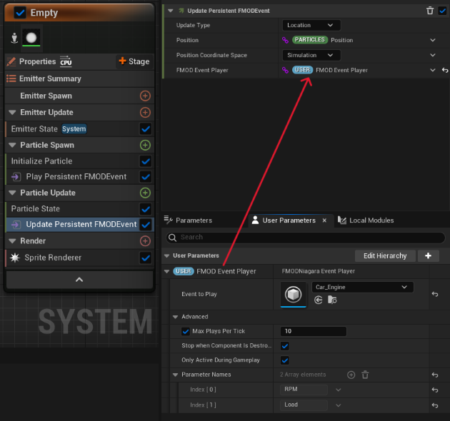 | 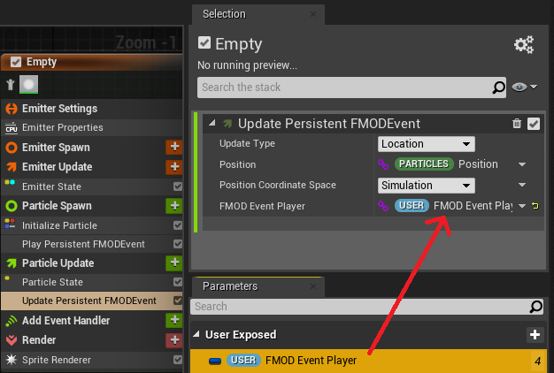 |
- Select the UpdateType
| UE5 | UE4 |
|---|---|
| 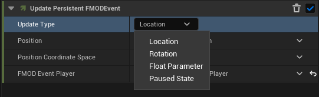 | 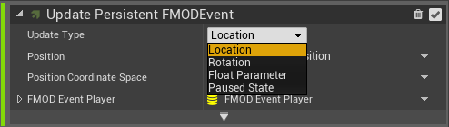 |
| 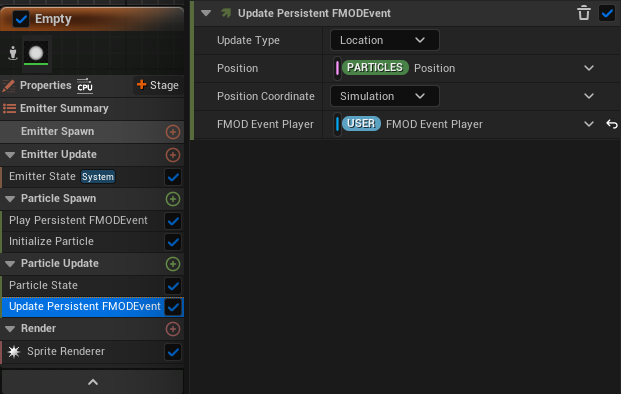 | 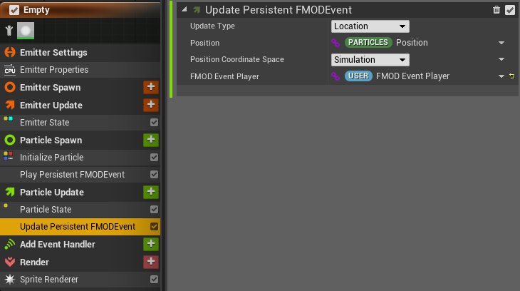 |
| 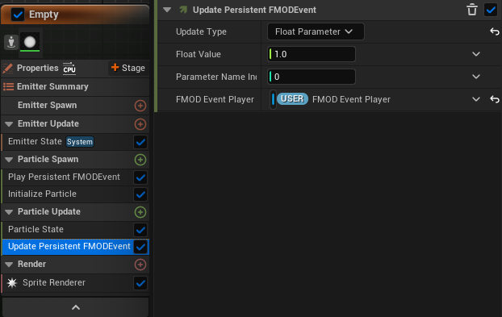 | 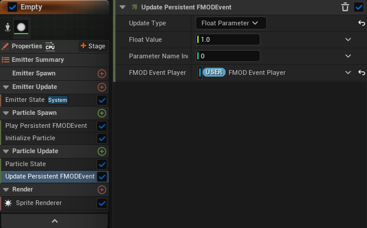 |
- Add your emitter to the scene and press play to hear it in action.